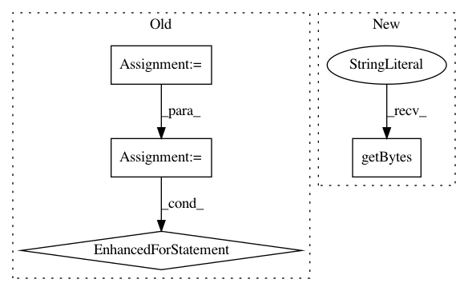

383ea0326ae103b5d5e0b62ed9c3cb18510c5b9e,distributed/comm/tcp.py,TCP,write,#TCP#Any#Any#Any#,229
Before Change
try:
nframes = len(frames)
lengths = [nbytes(frame) for frame in frames]
length_bytes = struct.pack(f"Q{nframes}Q", nframes, *lengths)
frames = [length_bytes, *frames]
lengths = [len(length_bytes), *lengths]
if sum(lengths) < 2 ** 17: // 128kiB
// small enough, send in one go
stream.write(b"".join(frames))
else:
// avoid large memcpy, send in many
for frame, frame_bytes in zip(frames, lengths):
// Can"t wait for the write() Future as it may be lost
// ("If write is called again before that Future has resolved,
// the previous future will be orphaned and will never resolve")
if frame_bytes:
future = stream.write(frame)
bytes_since_last_yield += frame_bytes
if bytes_since_last_yield > 32e6:
await future
bytes_since_last_yield = 0
except StreamClosedError as e:
self.stream = None
self._closed = True
if not shutting_down():
After Change
stream._total_write_index += each_frame_nbytes
// start writing frames
stream.write(b"")
except StreamClosedError as e:
self.stream = None
self._closed = True
In pattern: SUPERPATTERN
Frequency: 3
Non-data size: 4
Instances
Project Name: dask/distributed
Commit Name: 383ea0326ae103b5d5e0b62ed9c3cb18510c5b9e
Time: 2021-02-17
Author: jakirkham@gmail.com
File Name: distributed/comm/tcp.py
Class Name: TCP
Method Name: write
Project Name: chakki-works/doccano
Commit Name: 43d9234b78a73840c41ab6f0da83960da84c5d14
Time: 2019-08-07
Author: null
File Name: app/api/tests/test_utils.py
Class Name: TestCoNLLParser
Method Name: test_calc_char_offset
Project Name: pantsbuild/pants
Commit Name: 791be481c4a0102042dc0a502b08ba5cc6a85987
Time: 2020-06-29
Author: 14852634+Eric-Arellano@users.noreply.github.com
File Name: src/python/pants/backend/python/rules/inject_init_test.py
Class Name: InjectInitTest
Method Name: assert_injected